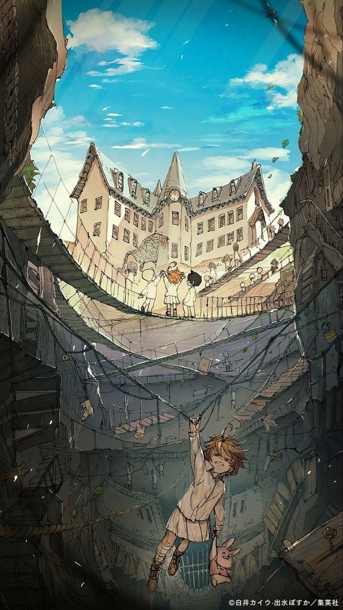
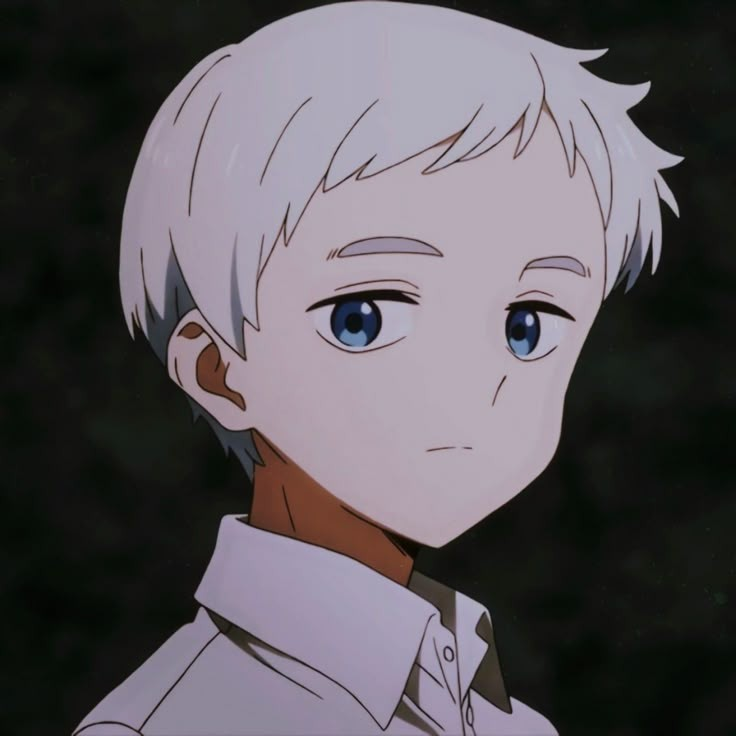
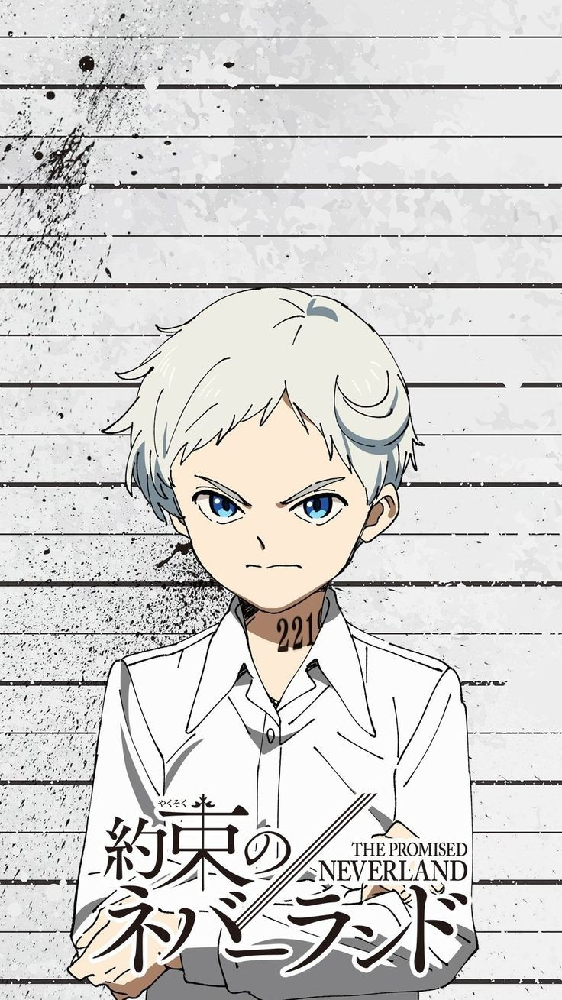

¿QUE ES?
The Promised Neverland es un manga y anime japonés creado por Kaiu Shirai (historia) y Posuka Demizu (ilustraciones).
Sinopsis:
La historia sigue a tres niños huérfanos —Emma, Norman y Ray— que viven en un orfanato aparentemente perfecto llamadoGrace Field House. Allí tienen comida, ropa, educación y una vida tranquila con otros niños y su “madre”, Isabella.Pero todo cambia cuando descubren un oscuro secreto: el orfanato es en realidad una granja humana donde los niños son criados como alimento para demonios.
Desde ese momento, los protagonistas planean escapar junto con los demás niños y enfrentarse al mundo exterior, que es mucho más peligroso de lo que imaginaban. 
Manga
Aunque ambas versiones comienzan con la misma premisa, el manga de The Promised Neverland ofrece una historia mucho más completa y desarrollada. A partir de la segunda temporada del anime, se omiten arcos narrativos clave como "Goldy Pond", personajes importantes y detalles profundos sobre el mundo, los demonios y la resistencia humana.
El manga proporciona una evolución más lógica y emocional de los personajes, mientras que el anime acelera los eventos y cambia el final, lo que causó decepción entre muchos fans por su falta de profundidad.
ANIME
El anime de The Promised Neverland ofrece una animación de alta calidad y una primera temporada fiel al manga, destacando por su atmósfera de suspenso y giros impactantes. Sin embargo, en su segunda temporada toma decisiones polémicas al omitir partes importantes de la historia, lo que afecta la profundidad del argumento.
